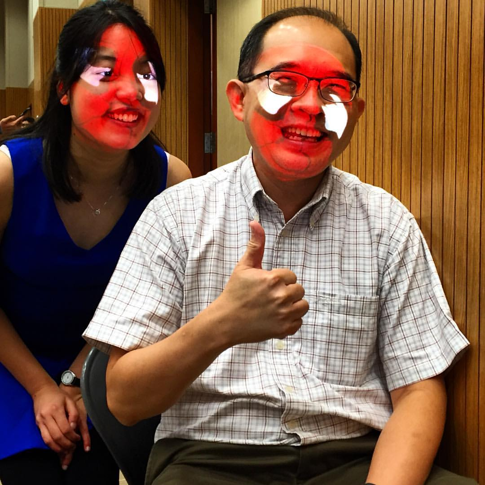

3D makeup Projection extracts makeup from a photo and projects it in on a user's face using a projector. A kinect tracks the user's face and an algorithm performs the necessary projection warping to fit the makeup to the face in real-time. The processing pipeline includes: kinect-projector calibration, projector colour calibration, makeup extraction from 2D face image, face detection with Kinect and 3D face rendering with a projector.
This project won the Best Final Year Project in National University of Singapore's School of Computing Project Showcase, 2016.